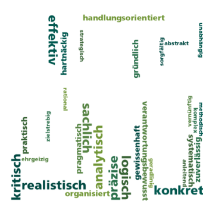
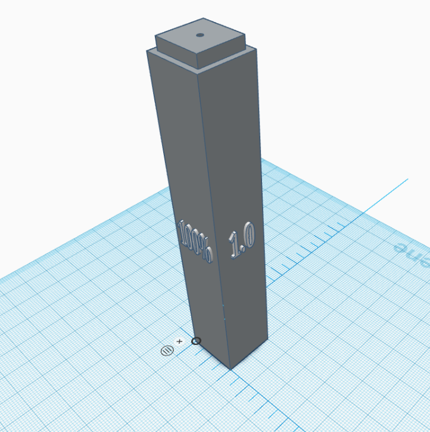
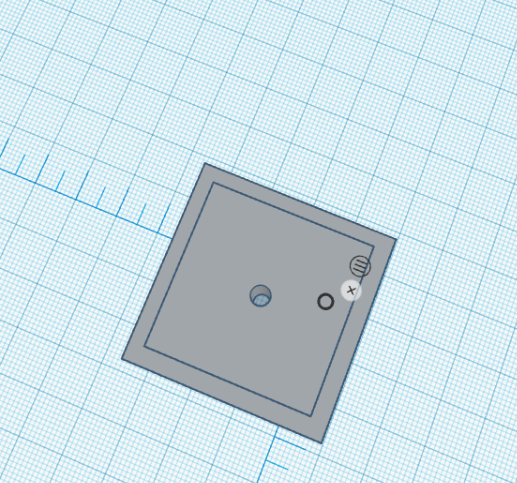

Effizient
hartnäckig
Realistisch
radsport | Gewehrschiessen | Motorsport
Ich habe viel Erahrung im CAD weil ich einen Kurs besucht habe und auch zu Hause im CAD Programm gearbeitet habe:
 Ich habe diesen Auftrag von einem Lehrer im CAD-Kurs erhalten. Er wünschte sich Bauklötze, mit denen man Brüche, Prozentzahlen und Dezimalzahlen darstellen kann. Diese Klötze sollten zusammensteckbar sein, und wir haben sie schließlich mittels 3D-Druck hergestellt. Die kleinen Klötze haben ein Loch oben, um überschüssige Luft entweichen zu lassen. Dies verhindert, dass sich bei ihnen zu hoher Druck aufbaut, der das Zusammenstecken erschweren könnte.